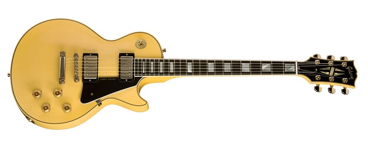
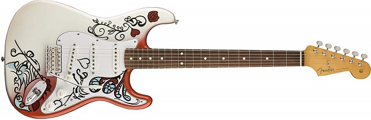
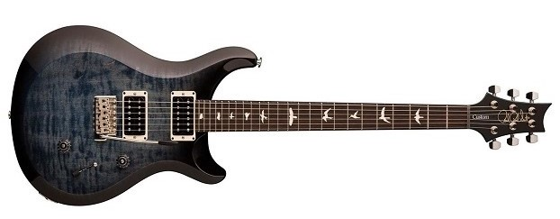

Arjun's Guitar Picks
Gibson Les Paul
The Gibson Les Paul was first introduced to the world in 1952. The guitar was designed by former Gibson president, Ted McCarthy, with input from legendary guitar virtuoso, Les Paul. This was the first solid body guitar to be sold by Gibson. Once considered a failure, the Les Paul grew to become one of the most coveted and iconic instruments of the 20th and 21st centuries. From George Harrison of The Beatles and Jimmy Page of Led Zeppelin to Slash of Guns N' Roses, the Les Paul has become an icon of Rock music and has elevated Gibson to become one of America's most cherished brands. All Gibsons are manufactured in Nashville, Tennessee.
Fender Stratocaster
When people hear the phrase electric guitar, they often visualize the Fender Stratocaster. Designed from 1952-1954 by Leo Fender, Bill Carson, George Fullerton, and Freddie Tavares, the Stratocaster has grown to become one of the most popular and iconic instruments thoughout the world. First made famous by the late Buddy Holly, the Stratocaster became synonomous with the world's most revered guitarist, Jimi Hendrix. The instrument is used in a variety of genres including Jazz, Blues, Country, Rock, Reggae, Punk, Heavy Metal. Notable guitarists who have used the Fender Stratocaster include Jimi Hendrix, Eric Clapton, Steve Ray Vaughan, David Gilmour, Jeff Beck. The list goes on and on. The guitar is manufactured today in America and Mexico. A cheap varianet branded as Squier is manufactured in South East Asia.
Paul Reed Smith Custom 24
While the Fender Stratocaster and Gibson have become household names, there is a newcomer that has taken the guitar world by storm. Paul Reed Smith Guitars was founded in Stevensville Maryland by renowned luthier Paul Reed Smith in 1985. The Custom 24 was one of the first guitars PRS put on the market, and remains one of the brand's most popular guitars. This model features a mahogany back and neck and rosewood fingerboard decorated by bird shaped inlays which have become a defining design of the brand. The guitar features a pickup selector which allows it to imitate the single coil sound of the Fender Stratocaster as well as the humbucking sound of the Gibson Les Paul. Despite their struggles during the 2008 recession, PRS has recovered and have continued to grow their brand and reach guitarists throughout the world.